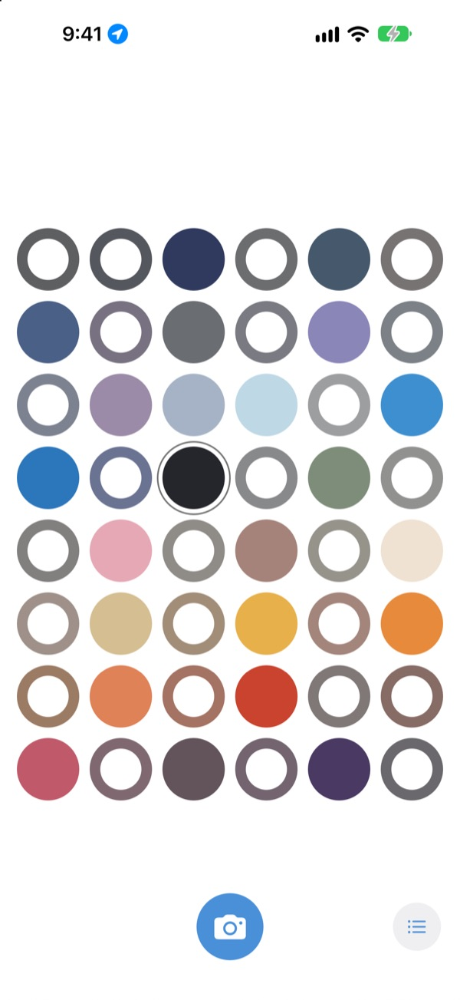
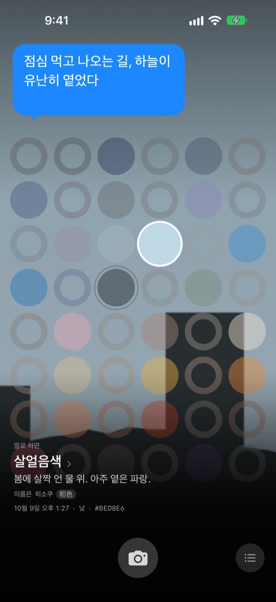
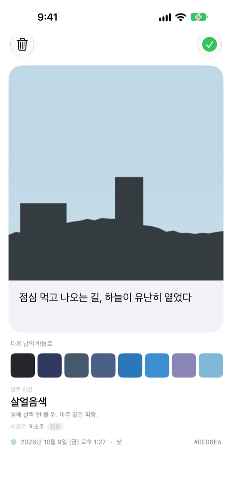
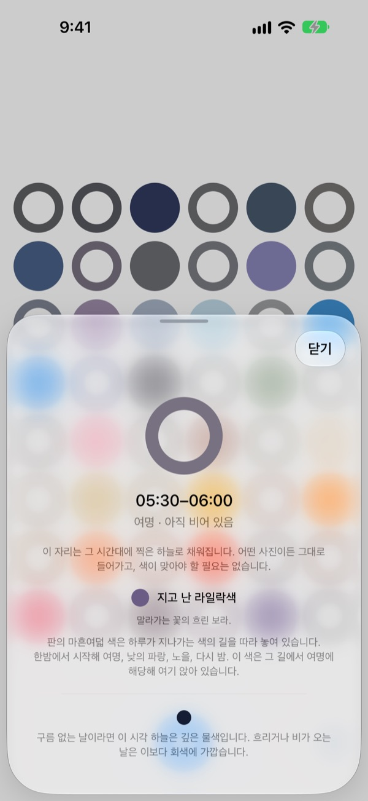
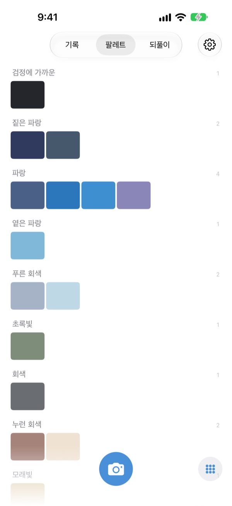

오늘 하늘은
무슨 색이었나요?
하늘을 한 장 찍으면 마흔여덟 칸의 판에서 그 시각의 칸이 찍은 색으로 채워집니다. 살얼음색, 수영장 타일색, 홍시색처럼 그 색을 닮은 이름도 붙습니다.
무료입니다. 계정도 로그인도 없습니다.

판을 직접 눌러 보세요
칸을 누르면 그 칸이 언제의 하늘인지 보입니다. 하늘 사진을 넣으면 지금 시각의 칸이 채워지고, 날을 넘겨 보면 판이 어떻게 달라지는지 보입니다.
하늘은 매일 보는데, 기억나는 색은 없습니다
출근길에 올려다본 하늘, 점심 먹고 나오던 길의 하늘이 무슨 색이었는지 저녁이 되면 떠오르지 않습니다. 사진첩에 남은 하늘 사진은 다른 사진들 사이에 묻힙니다. 하늘색은 하늘 사진을 색으로 모아, 오늘 하늘이 지나간 길을 한 판에 보여 줍니다.
하늘마다 이름이 붙습니다
찍은 색에는 살얼음색, 수영장 타일색, 홍시색처럼 눈에 그려지는 이름이 먼저 붙고, 그 아래 한국 전통색, 일본 전통색, 안료, 표준색에서 가져온 이름이 따라옵니다.
충분히 가까우면 이름은, 멀면 가장 가까운 이름은이라고 정직하게 말합니다.

한 마디를 남깁니다
찍고 나면 바로 카드가 열립니다. 그 하늘을 보며 든 생각을 한 줄 적어 두면, 판에서 그 칸을 눌렀을 때 하늘 위에 다시 떠오릅니다.
다른 날 모은 하늘의 색을 이 사진의 하늘에 입혀 보고, 그림으로 공유할 수도 있습니다.

빈 칸은 길잡이가 됩니다
빈 칸을 누르면 그 칸이 하루 중 언제인지, 어떤 색을 찾으면 되는지 알려 줍니다. 구름 없는 날이라면 이 시각 하늘이 어떤 색인지도 내 자리의 해 뜨고 지는 시각에 맞춰 말해 줍니다.
색이 맞아야 할 필요는 없습니다. 흐린 날의 회색도 그날의 하늘색입니다.

기록, 팔레트, 되풀이
찍은 하늘을 시간순으로 보고, 모은 색을 파랑, 회색, 모래빛 같은 갈래별 팔레트로 모아 봅니다. 같은 시각의 하늘을 다른 날 다시 찍으면 둘이 나란히 섭니다.
홈 화면 위젯으로 오늘의 판과 오늘 찍은 하늘을 바로 봅니다.

시작은 세 단계면 됩니다
- 1
하늘을 올려다봅니다
판 아래 카메라 단추를 누르고, 하늘이 정사각형을 채우도록 찍습니다.
- 2
칸이 채워집니다
지금 시각의 칸이 찍은 색으로 채워지고 이름이 붙습니다.
- 3
한 줄을 남깁니다
열린 카드에 그 하늘을 보며 든 생각을 적습니다.
판은 하루를 이렇게 나눕니다
- 한밤 · 0시~5시
- 여섯 칸
- 여명 · 5시~8시
- 여섯 칸
- 낮 · 8시~16시
- 열두 칸
- 늦은 오후 · 16시~18시
- 여섯 칸
- 노을 · 18시~21시
- 열두 칸, 15분마다 한 칸
- 밤 · 21시~24시
- 여섯 칸
하늘이 빨리 바뀌는 노을 무렵은 칸이 촘촘하고, 오래 비슷한 한밤은 칸이 넓습니다. 위가 한밤이고 아래로 내려올수록 하루가 흘러갑니다.
자주 묻는 질문
칸은 어떻게 채워지나요?
오늘 찍은 하늘은 찍은 시각의 칸을 채웁니다. 예상과 다른 색이 나와도 그대로 들어갑니다. 실제로 그 시간의 하늘이 그랬으니까요. 예전에 모아 둔 하늘은 색으로 들어갑니다. 어느 칸의 색과 충분히 가까우면 그 칸을 채우고, 하늘 하나는 한 칸만 채웁니다.
어제 차 있던 칸이 오늘은 비어 있어요.
판은 오늘입니다. 어제 찍은 하늘이 시각으로 채웠던 칸은 오늘이 되면 색으로만 다시 맞춰 봅니다. 그래서 어떤 날은 거의 다 차고 어떤 날은 비어 보입니다. 사진이 사라진 것은 아닙니다. 모은 하늘은 전부 기록에, 색 순서로는 팔레트에 그대로 있습니다.
채운 칸이 점점 흐려져요.
일부러 그렇습니다. 사진은 일주일 동안 제 색으로 있다가, 그 뒤 여덟 주에 걸쳐 천천히 옅어집니다. 지워지는 것이 아니고 끝까지 흐려지지도 않습니다. 그 시간대의 하늘을 다시 찍으면 곧바로 제 색으로 돌아옵니다. 끊기는 연속 기록도, 되찾아야 할 숫자도 없습니다.
색이 맞아야 하나요?
아닙니다. 통과나 실패 같은 판정이 없습니다. 찍은 사진은 무조건 저장되고, 흐린 날의 회색도 그날의 하늘색입니다.
위치는 왜 묻나요?
빈 칸을 눌렀을 때 구름 없는 날 이 시각의 하늘색을 내 자리의 해 뜨고 지는 시각에 맞춰 알려 주는 데만 씁니다. 킬로미터 단위의 대략적인 위치만 쓰고, 좌표는 사진에 붙지 않습니다. 거부해도 앱은 그대로 동작하고, 그때는 서울을 기준으로 합니다.
사진첩에 있는 하늘도 넣을 수 있나요?
네. 카메라 대신 사진 앱에서 고른 하늘도 정사각형으로 잘려 들어가고, 지금 찍은 하늘처럼 지금 시각의 칸을 채웁니다.
사진을 지우려면 어떻게 하나요?
사진을 열고 지우기를 누르거나, 기록에서 왼쪽으로 밀면 됩니다. 기기와 iCloud에서 함께 지워집니다. 앱을 삭제해도 iCloud에 있는 사본은 남아서, 다시 설치하면 모은 하늘이 돌아옵니다.
기기를 바꾸면 모은 하늘은 어떻게 되나요?
모은 하늘은 내 iCloud에 저장되어 같은 Apple 계정으로 로그인한 새 기기에서 이어집니다. 계정도 서버도 없고, 사진과 색은 개발자에게 전송되지 않습니다. 광고나 추적도 없습니다.
정말 무료인가요?
네, 모든 기능이 무료입니다. 마음에 들면 앱 안에서 개발자에게 팁을 보낼 수 있지만, 팁으로 열리는 기능은 없습니다.
어떤 기기에서 쓰나요?
iOS 17.0 이상의 iPhone에서 씁니다. 세로 화면 전용입니다.
버그나 이상한 동작, 하고 싶은 이야기는 leeo@kakao.com로 보내 주세요. 어떤 상황이었는지와 iOS 버전을 함께 적어 주시면 찾기가 훨씬 쉽습니다.